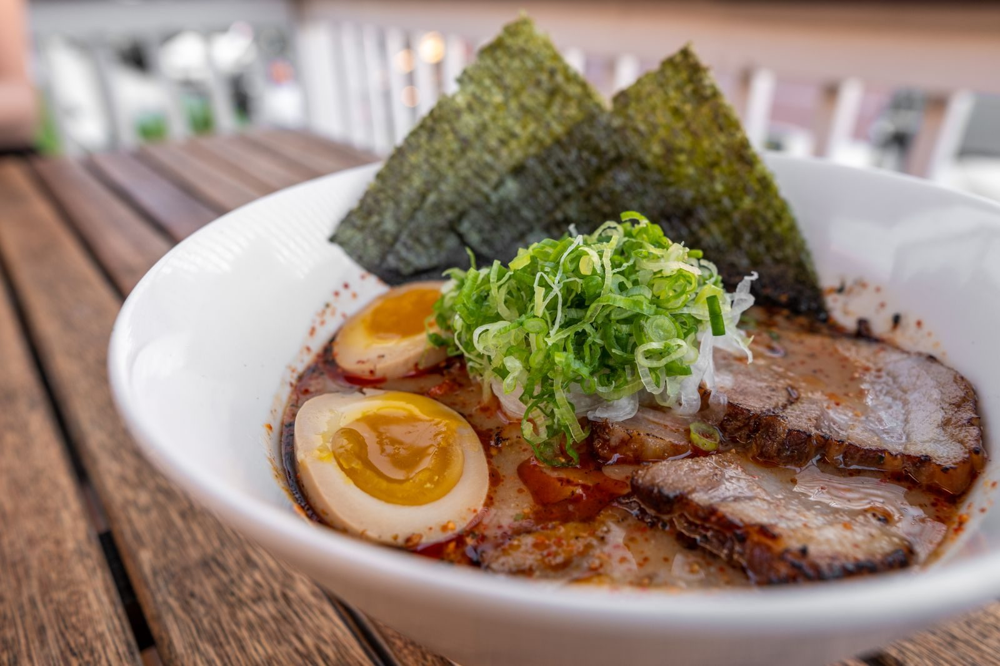
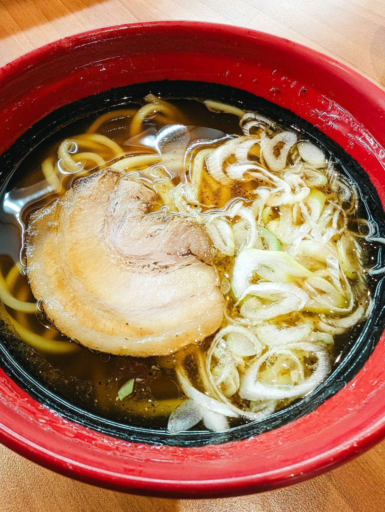

広島県初上陸

王道家の味が、
王道家の味が、
福山にやってくる。
家系ラーメン好きの皆さまへ。王道家・清水裕正社長が手掛ける「王道乃印」が、福山市緑町に開店します。
2027年1〜2月 オープン予定広島県福山市緑町2-1-8
Instagramで開店情報を受け取る
開店日・メニュー・料金は、決まり次第お知らせします
FOR YOUこんな方に、
こんな方に、
待っていてほしい一杯です
- 家系ラーメンが好きで、県外の店まで食べに行ったことがある
- 「王道家」の名前を聞いて、気になっていた
- 福山市内で、家系ラーメンの店を探している
- 新しい店の開店日は、いち早く知っておきたい
その一杯が、
福山市緑町で
食べられるようになります。
Instagramをフォローして待つ
X（旧Twitter）でも発信中：@oudou_yuzunoya
ABOUT
「王道乃印」とは


王道家の流れを受け継ぐ、
家系ラーメンのブランド。
王道家・清水裕正社長が
手掛ける「王道乃印」。
家系ラーメン店「王道家」。その清水裕正社長が手掛けるブランドが「王道乃印」です。
ゆず乃家は、その「王道乃印」の店として、広島県で初めて福山市に開店します。
01
王道家の流れをくむ一杯
王道家の清水社長が手掛ける「王道乃印」の家系ラーメンを、福山で。
02
広島県で初めての「王道乃印」
県外まで行かなくても、福山市内で食べられるようになります。
03
バス停「緑町」から徒歩1分
JR福山駅からは約1.7km。バスなら停留所の目の前です。
OPENING
開店のお知らせ
- オープン
- 2027年1〜2月 予定
- 開店日
- 決まり次第、InstagramとXでお知らせします
- メニュー・料金
- 開店前にInstagramとXでお知らせします
- 営業時間
- 開店前にInstagramとXでお知らせします
ACCESS
お店の場所
- 店名
- 家系ラーメン 王道乃印 ゆず乃家
- 住所
- 〒720-0804
広島県福山市緑町2-1-8 - アクセス
- バス停「緑町」から約22m（徒歩1分）
JR福山駅から約1.7km（徒歩22分） - オープン
- 2027年1〜2月 予定
- 運営
- 株式会社ハートランド